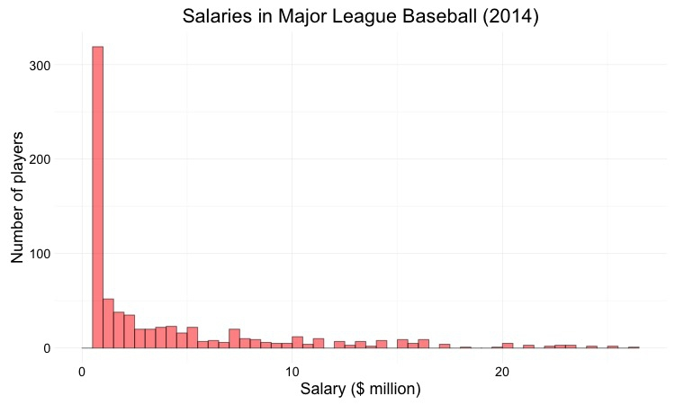

Toggle navigation
Intro Data Journalism
Class notes
What is data? And what can it do for me?
Acquiring, cleaning, and formatting data
Journalism with spreadsheets
Making charts and maps
Software
Data
Email instructor
Name
Email
1. Identify the categorical variables from this list: a) day of the week; b) height (meters); c) identifies as conservative or liberal; d) speed (mph); e) weight (lbs); f) speed (high, medium, low).
2. List three possible summary statistics (aggregate measures) for a continuous variable, with a one-sentence explanation of each. For example, sum is the result of adding together the values for all records in the dataset. (Do not repeat this example!)
3. What should be the delimiter in a text file of data with the extension
.csv
?
4. When writing a spreadsheet formula, what is the first character that you should type?
5. What type of chart is this?

6. Donald Trump’s support is estimatated at 40% in a new poll. The margin of error is 3.5 percentage points. What is the range of values that his support is likely to fall within 95% of the time, if the same poll had been repeated 100 times?
7. An agency’s budget was $21 million in 2015. It is $23.5 million in 2016. What was the percentage increase, rounded to one decimal place?
8. There is a problem with this polling question: “Do you favor Hillary Clinton’s tax policy?” Suggest a rewrite to solve that problem.
9. There were 15,000 violent crimes in 2015 in city A, which had a population of 350,000. There were 9,000 violent crimes in City B, which had a population of 500,000. Complete the following sentence with a number rounded to one decimal place: “City A’s violent crime rate was ….. times that of city B.”
10.
This story
made page A1 of
The New York Times
, but is flawed as a work of data journalism. In no more than two paragraphs, explain what was wrong.
Submit
(Your answers will also be sent to the email address you provided.)